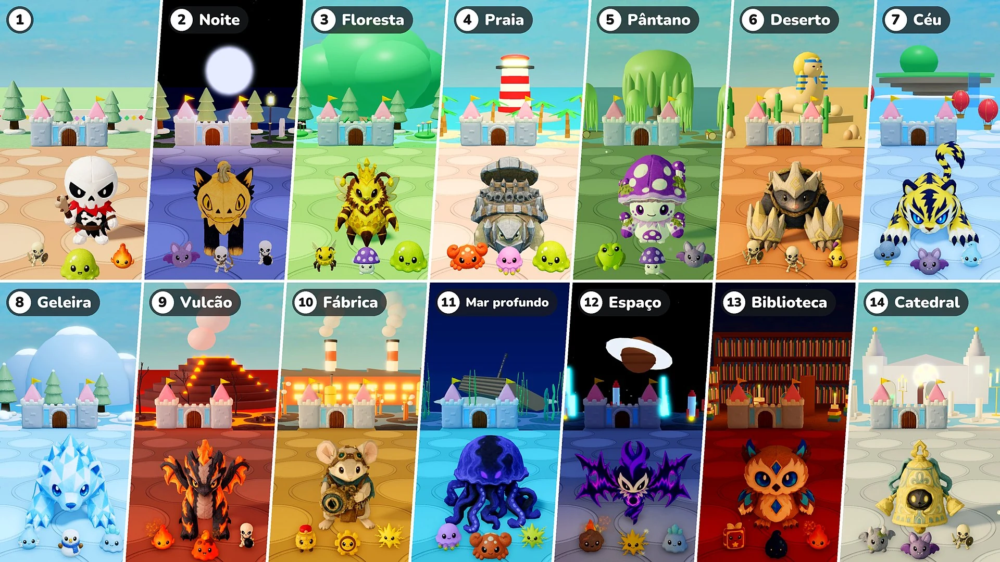

Temporada 2 · Atualização 07 · 10 de novembro

Defesa do castelo
- Fases: Agora cada 10 rodadas formam uma fase. A Fase 1 é a vila de sempre; a partir da Fase 2, cada fase é um lugar diferente, com sua luz e seu clima, seu chão e sua decoração, e com seus monstros, elites e chefes. Depois do último lugar, os lugares recomeçam a partir do lugar da Fase 2.
- Chefes: Muda de um chefe a mais a cada 10 rodadas para sempre um só chefe, acompanhado de tantas elites quantos eram os chefes a mais (1 nas rodadas 15 e 20, 2 nas rodadas 25 e 30…). A partir da Fase 2, chefes e elites são as pelúcias daquele lugar. Melrainha agora também pode vir como chefe.
- Elites: As elites agora são 1,15 vez maiores. A partir da Fase 2, a vida delas aumenta 50% por fase, e as estrelas que derrubam mudam de 10 para 10 × o número da fase (20 na Fase 2, 30 na Fase 3…).
- Novos monstros: 16 novos monstros chegam aos lugares (Morcego · Caranguejo · Água-viva · Sapo venenoso · Escorpião · Nuvem de tempestade · Espírito de geada · Boneco de neve · Slime de gelo · Slime de lava · Soldado de corda · Engrenagem · Meteoro · Livro de feitiços · Gota de tinta · Gárgula). As abas Monstros e Chefes da Enciclopédia agora são divididas por fase.
- Aprimoramento de atributos: Na rodada em que se escolhem pelúcias, o Aprimoramento de atributos não aparece mais.
- Invocações: Corrigido um problema em que os Aprimoramentos de atributos não se aplicavam às invocações. Agora eles se aplicam às abelhas de Melrainha, à árvore de Brotopio e ao Gêmeo do espelho assim como às pelúcias, e um Aprimoramento de atributos escolhido enquanto uma invocação está em campo se aplica na hora.
- Velocidade ×2: Um botão “×2” foi adicionado ao lado do botão de pausa. Aperte e a batalha anda duas vezes mais rápido; aperte de novo para voltar à velocidade normal. O tempo para escolher pelúcias e aprimoramentos e o andar do seu avatar continuam iguais. Em “Jogar junto”, a partida inteira muda, não importa quem aperte.
- Vida do castelo: A barra de vida do castelo ficou maior, e os números de vida aparecem logo ao lado da barra.
Fases e lugares
Os lugares a partir da Fase 2, com seus monstros e chefes. As pelúcias que vêm como Chefe ou Grande chefe de um lugar também vêm como suas elites.
- Fase 2 · Noite: Morcego · Arqueiro esqueleto · Esqueleto-bomba — Chefe: Blissfox · Algodãozinho — Grande chefe: Dreadfox · Pumpcat
- Fase 3 · Floresta: Abelha operária · Cogumelo venenoso · Slime — Chefe: Pinhouriço · Melgeleia — Grande chefe: Melrainha — Elites: Brotopio
- Fase 4 · Praia: Caranguejo · Água-viva · Slime — Chefe: Cocoblin · Tartapedra — Grande chefe: Rocoblin · Tartaferro
- Fase 5 · Pântano: Sapo venenoso · Cogumelo venenoso · Morcego — Chefe: Mudpug · Caracoveno — Grande chefe: Boghorn · Esporinho
- Fase 6 · Deserto: Guerreiro esqueleto · Arqueiro esqueleto · Escorpião — Chefe: Bonis · Patafofa — Grande chefe: Bonix · Pataço
- Fase 7 · Céu: Nuvem de tempestade · Morcego · Espírito de geada — Chefe: Voltis · Auromarta — Grande chefe: Voltiger · Griffion
- Fase 8 · Geleira: Espírito de geada · Boneco de neve · Slime de gelo — Chefe: Glassy · Shardfin — Grande chefe: Polarrock · Prismlance
- Fase 9 · Vulcão: Brasa · Slime de lava · Esqueleto-bomba — Chefe: Flamo · Ashgon — Grande chefe: Flammonyx · Embergon
- Fase 10 · Fábrica: Soldado de corda · Engrenagem · Faísca — Chefe: Mouseball · Relojinho — Grande chefe: Optimouse · Obscor
- Fase 11 · Mar profundo: Água-viva · Caranguejo · Faísca — Chefe: Hydris · Frico — Grande chefe: Serenis · Abyzel
- Fase 12 · Espaço: Meteoro · Faísca · Slime de gelo — Chefe: Voidren · Echowing — Grande chefe: Voidling · Noisewing
- Fase 13 · Biblioteca: Livro de feitiços · Gota de tinta · Brasa — Chefe: Melty · Briarowl — Grande chefe: Candric · Crystowl
- Fase 14 · Catedral: Gárgula · Morcego · Guerreiro esqueleto — Chefe: Lilupi · Sineta — Grande chefe: Radiant · Sinetão